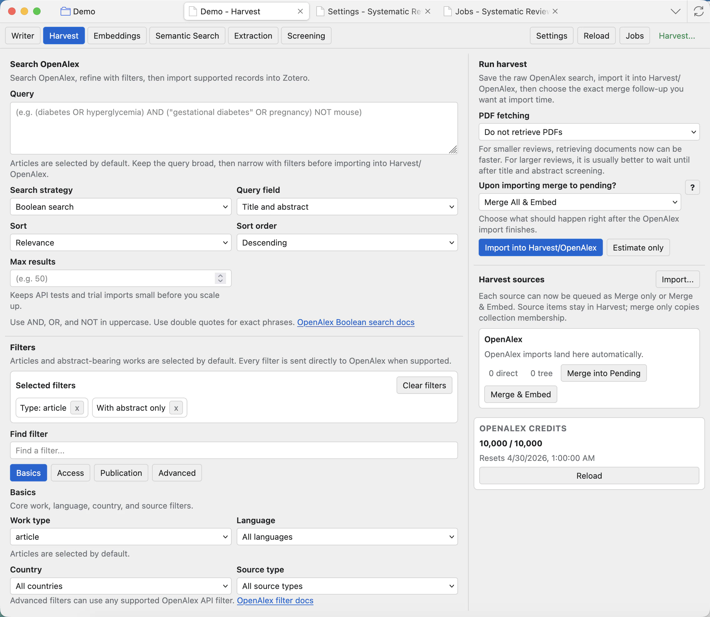
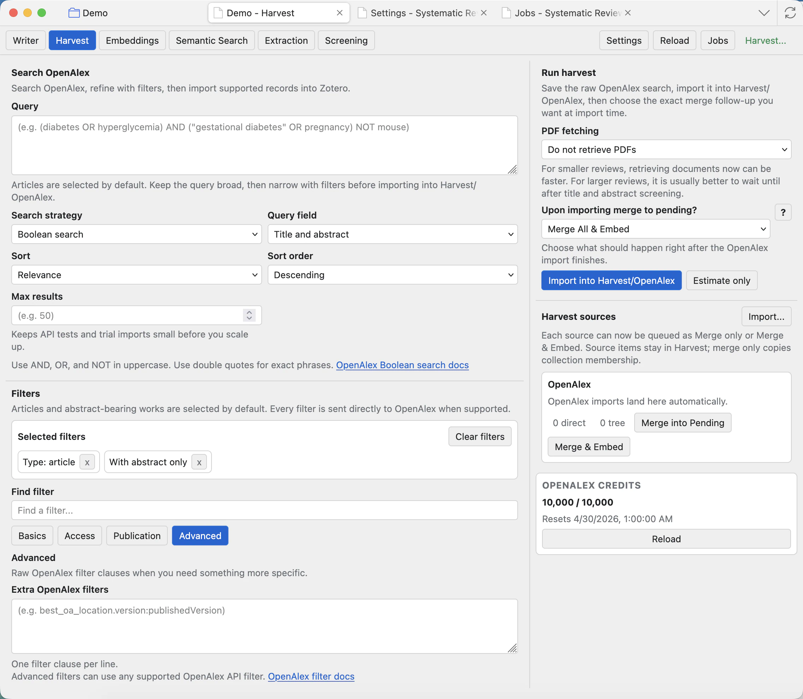
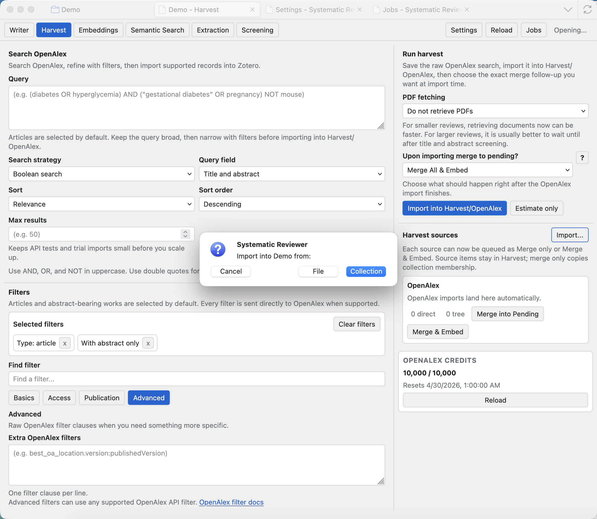
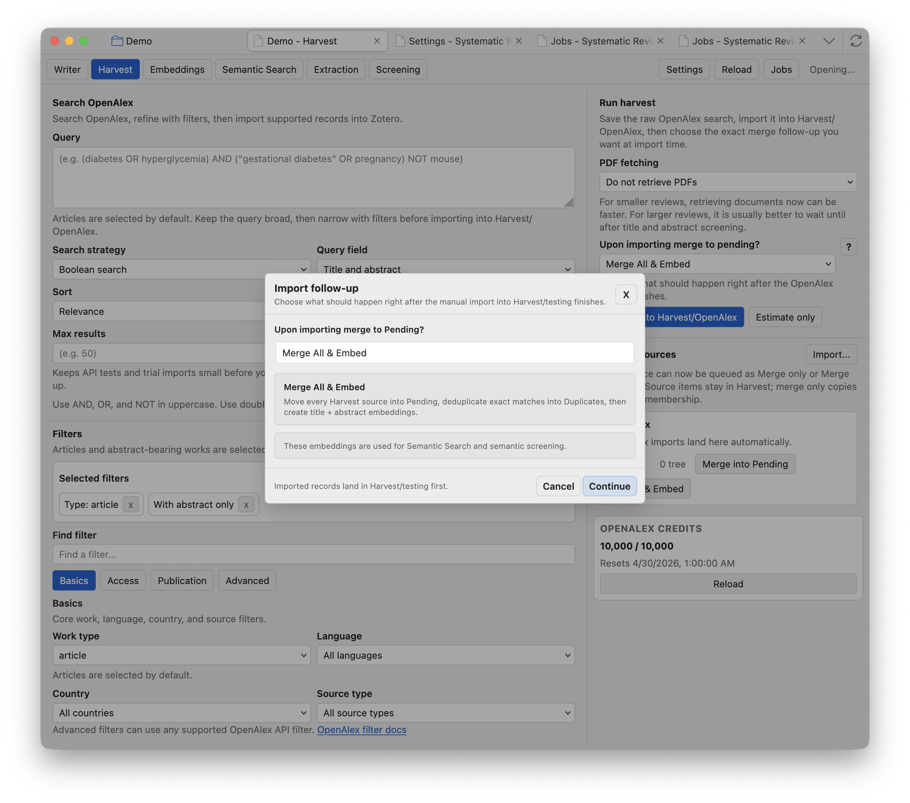
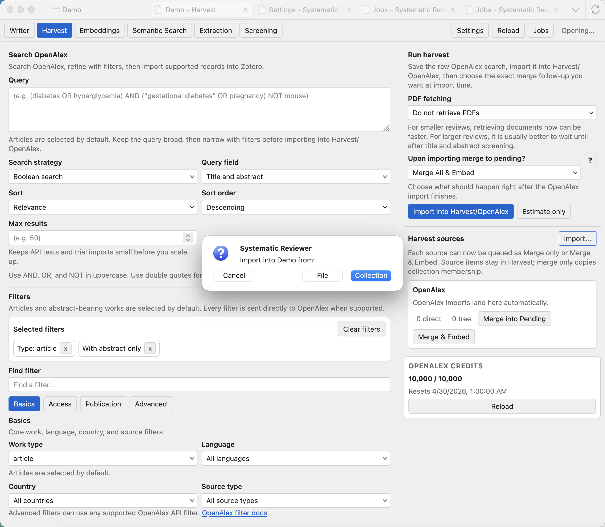
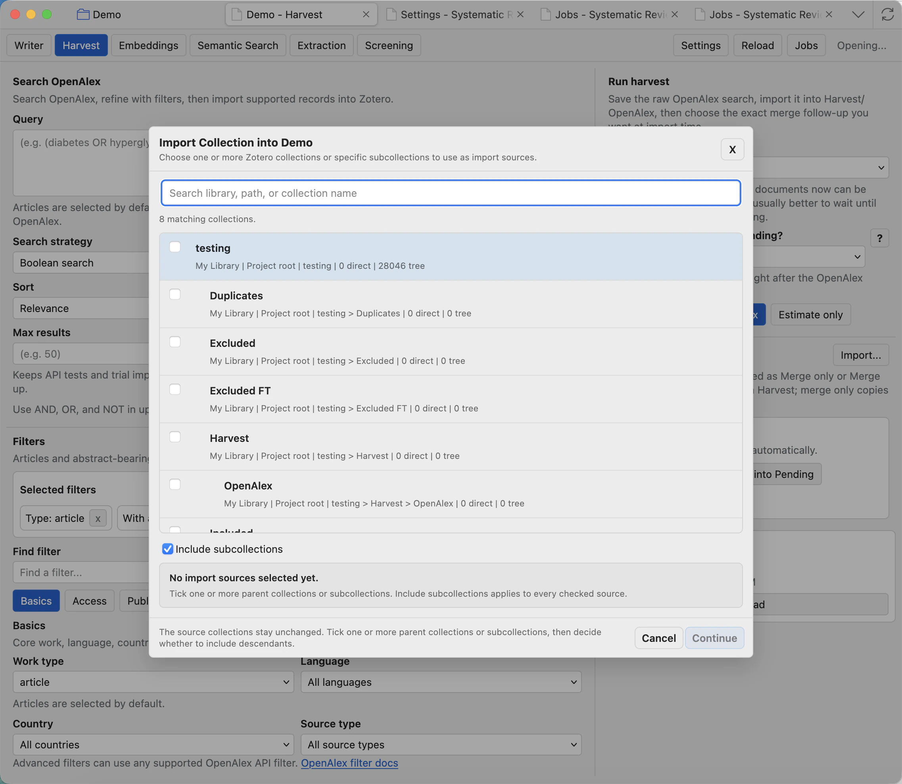

Harvest
Harvest helps you build OpenAlex searches, import records, and move selected harvest sources into the review pipeline.

Understand the Harvest page
For normal OpenAlex harvesting, add or review your OpenAlex API key in Settings: Harvest and OpenAlex.
Query
Enter the topic search text. Start broad enough to catch the literature, then narrow with filters instead of making the first query too restrictive.
Field and search mode
Choose where OpenAlex should search, such as title and abstract, and whether the query should be estimated or imported.
Sort and max results
Control the result order and upper limit. Use smaller limits while testing a query, then increase when the strategy looks right.
OpenAlex credits
Shows available OpenAlex access information. Add an API key in Settings when you need normal harvesting and higher limits.
Import into Harvest/OpenAlex
Runs the search and saves imported records as a harvest source inside the project.
Harvest sources
Lists saved imports. Select a source before merging it into Pending or embedding it.
Build filters
Use filters to turn a broad topic into a reproducible search strategy. Basic filters cover common choices; advanced filters let you add raw OpenAlex clauses when the search needs something specific.

Run a harvest import
Click Import into Harvest/OpenAlex when the query is ready. The app shows a confirmation prompt before importing. Imported records go into the Harvest area first, not directly into the active screening queue.


Merge All & Embed
Use this when the import looks correct and you want the records ready for Screening and semantic workflows as soon as the import finishes.
Merge only
Use merge without embeddings when you want records in Pending but do not yet need semantic search or semantic screening columns.
Cancel
Stops the follow-up choice before it is queued. Imported Harvest records remain separate until you merge them later.
Import from existing Zotero collections
Use the Harvest source Import... button when records already exist in Zotero. This is useful for demo projects, hand-curated collections, previously harvested collections, or records gathered outside OpenAlex.


Search collections
Filter by library, path, or collection name. This helps when a Zotero library has many projects or nested collections.
Include subcollections
When checked, selected parent collections include their descendants. Leave it off if you only want directly contained items.
Continue
Queues the import source after at least one collection is selected. The original Zotero collections stay unchanged.
Merge into the review
After import, select a Harvest source. Merge into Pending moves the relevant imported records into the screening pipeline. Merge & Embed also queues embeddings for title and abstract text when an embeddings model is configured.
Good harvesting habits
- Use the estimate/preview workflow before importing a very large search.
- Name searches clearly so later sources are understandable.
- Keep each search strategy in the report Methods section or workflow log.
- Use Jobs to monitor long imports, merges, and embedding handoffs.
Harvest source items stay as evidence of where records came from. Merging into Pending makes them part of the active screening workflow.